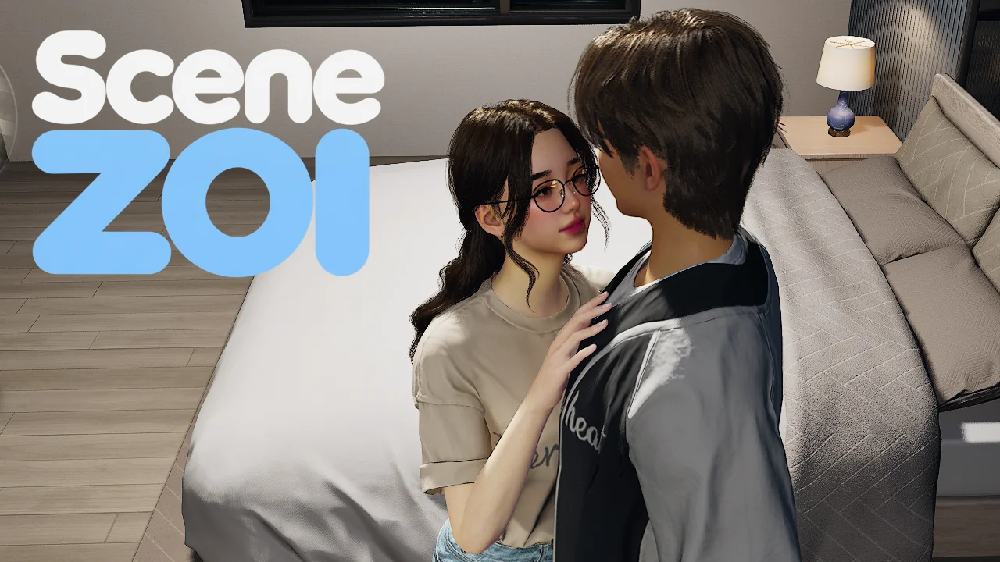

Download SceneZOI
A free, open-source animation framework for inZOI. Play synchronized scenes, add animation packs, or build your own.

Install & play
SceneZOI requires inZOI and runs on its own. Choose the packaged ZIP from GitHub Releases and skip the source code archives.
- Extract the ZIP. Close inZOI and extract it to
Documents\inZOI\Mods. OpenSceneZOI_93C44199and check thatmod_manifest.jsonis directly inside. If you’re updating, replace the previous mod folder. - Enable SceneZOI. Turn it on in the game’s mod management menu, then load your save.
- Start a solo scene. Click the controlled Zoi and choose Solo SceneZOI session below AI Emote. The panel gives you access to Scene Settings and Exit.
Manual picker and gameplay add-ons
Open Scene Settings using the cog icon. Under Debug, turn on SceneZOI manual start and exit the solo session. The manual picker is available on the controlled Zoi and supported furniture. You can switch to a free Zoi and start another scene while a manual household scene continues.
Gameplay add-ons such as VelvetZOI can start scenes through the public API. VelvetZOI on Nexus Mods · VelvetZOI on Patreon
Optional HZoi content pack
SceneZOI itself is all-ages. HZoi is a separate adult content pack. Extract HZoi into the same Mods directory, check that HZoi_660649D8 contains its own mod_manifest.json, and enable both mods. Get HZoi
SceneZOI ships no nude body meshes. For adult content, a compatible body replacer such as Supponpon or ZoiBits is recommended. Jiggle physics are optional. SceneZOI supports compatible male body replacers automatically. Report a compatibility issue
What’s new
Read the latest changelog on GitHub.
What SceneZOI does
SceneZOI is a modular, data-driven framework. Animation packs describe what plays and how it’s presented. Gameplay add-ons decide when a scene starts and what happens afterward.
- Playback & placement
- Synchronized body and attachment tracks, including supported furniture, with navigation, playback speed and pause.
- Solo & group scenes
- Explicit roles and configurable metadata. Multiple sessions can run side by side, including background and autonomous scenes started by add-ons.
- Presentation
- Facial expressions, gaze, voices, sound effects, outfits and animated attachments.
- Tasks & progress
- Configurable progress rates and completion responses. HZoi uses these systems for its own scene progression.
- Player settings
- Saved sound-effect, voice and task-rate controls, with separate female and male settings where applicable. The interface supports 15 languages.
- Authoring & integrations
- Use compatible tracks from independent Unreal animation libraries. The public API lets add-ons find and start scenes, manage sessions, restrict navigation and respond to events.
Contributors
- acenetizenMaintainer and lead developer
- SephirothValentineConcurrent scenes and VelvetZOI
Support developers
SceneZOI is free. You can support individual contributors through their own pages.
Source code & authoring tools
Build your own animation packs and gameplay add-ons with the guides and SDK. Maya and Blender rigs and exporters are linked from the first-animation guide. SceneZOI is licensed under GPL-3.0-only. The applicable inZOI ModKit terms also apply when using the ModKit.